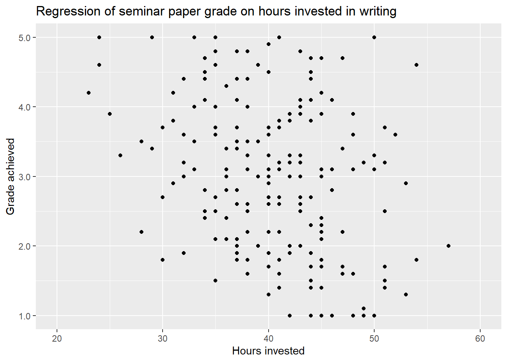
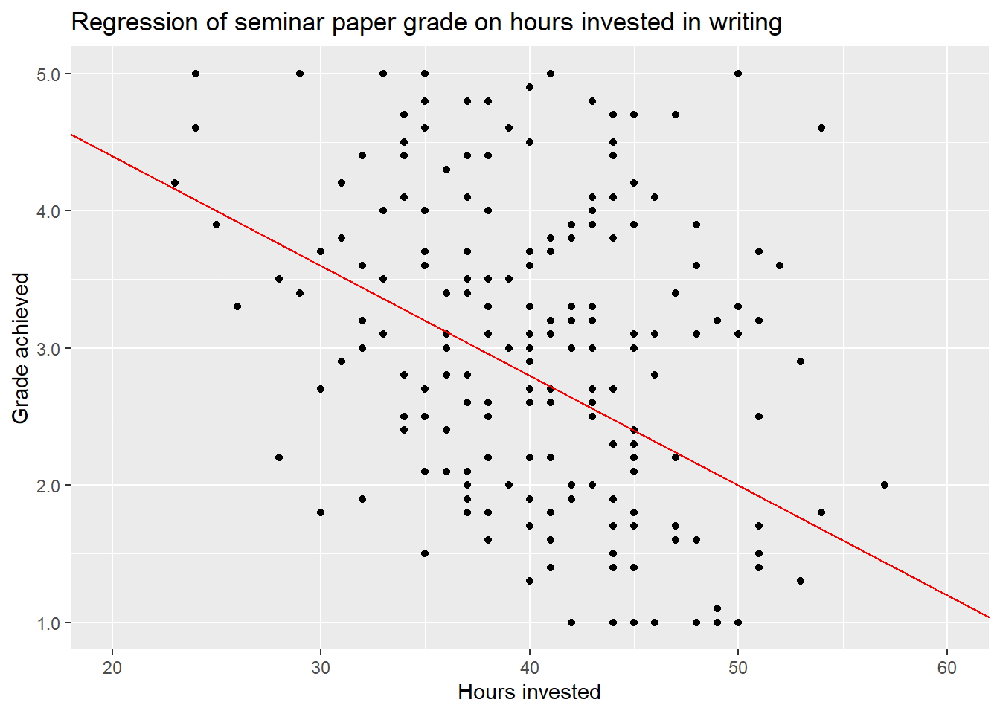
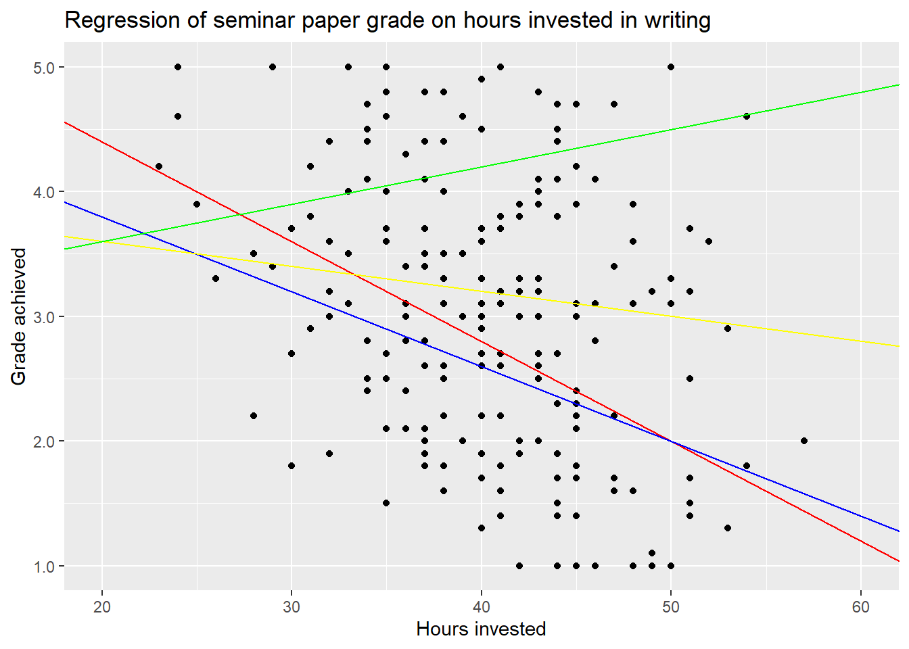
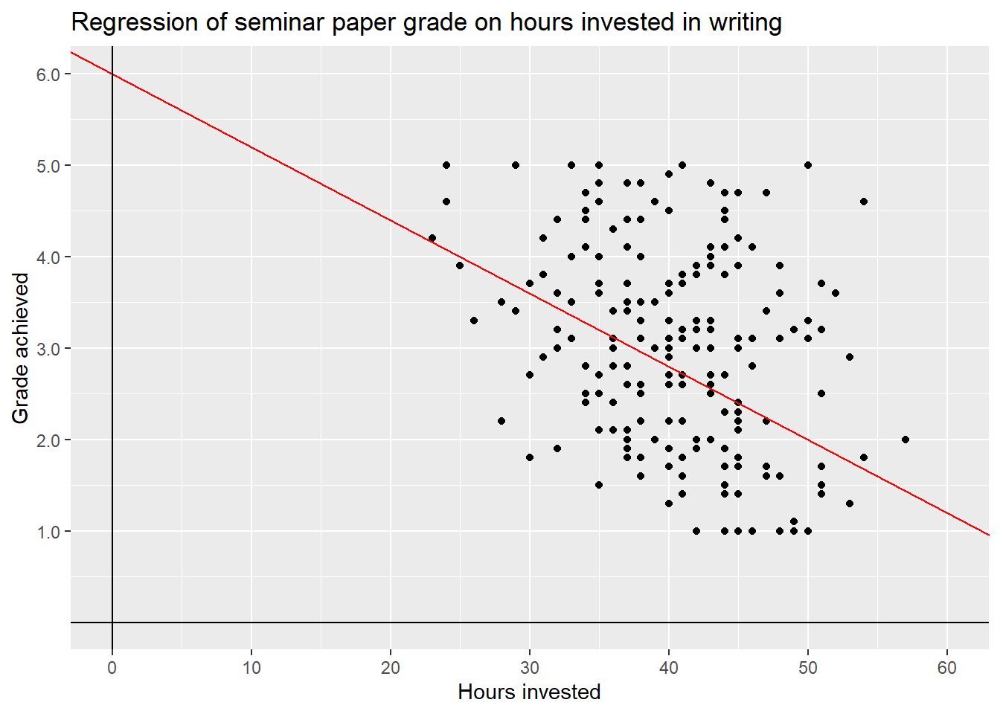
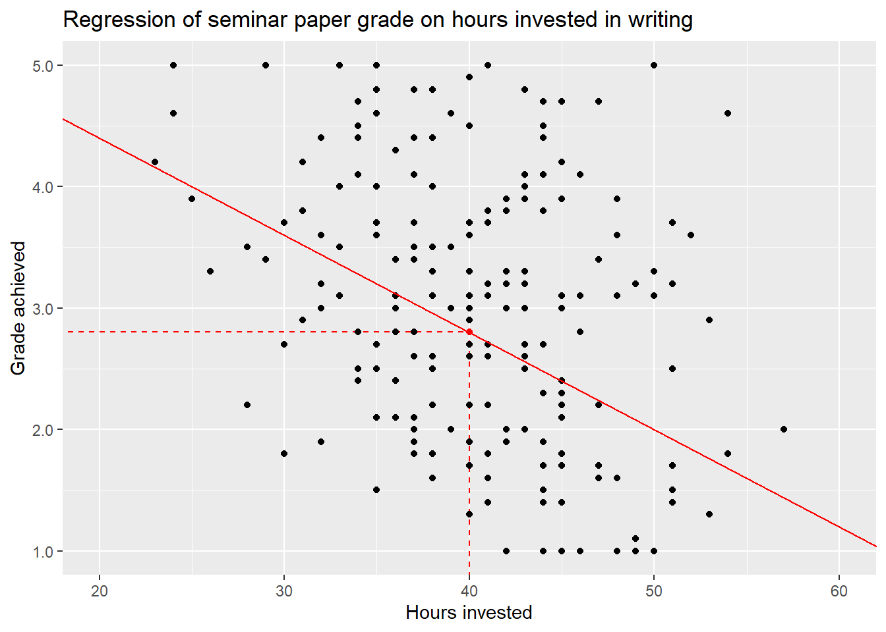
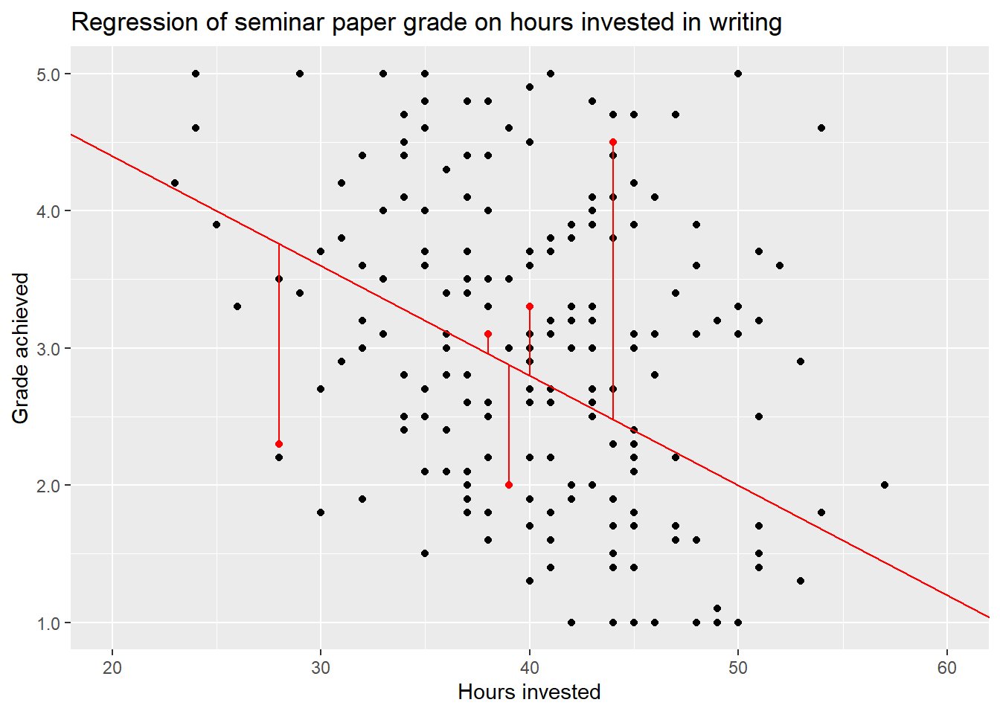
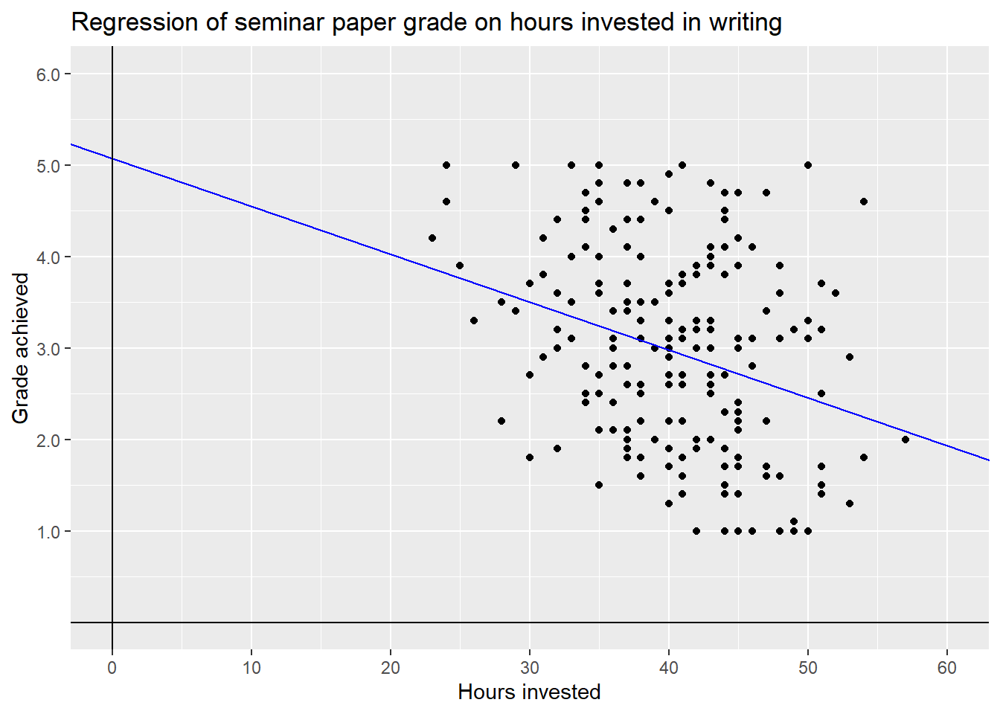
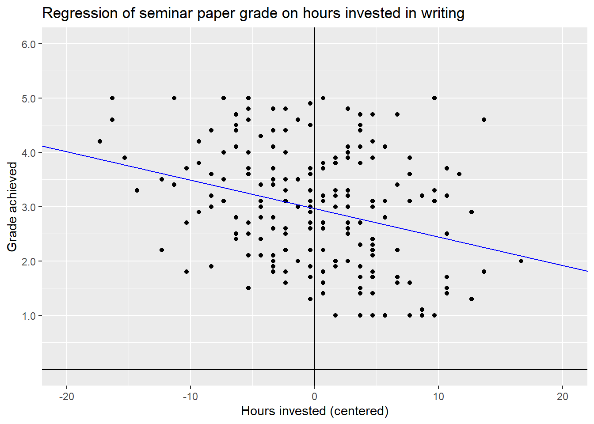

5 Linear Regression Theory I: Simple Linear Regression
The next three sessions will be an introduction for linear regressions. We will look at the theoretical underpinnings, the interpretation of results and the underlying assumptions of these models. For this introduction we will keep the NBA data aside and use some simulated data that plays nice with us. We will return to the NBA data in session 8 applying everything we learned to assess the effect of scored points on salary.
5.1 Objectives
- Understand simple linear regression
- Understand the regression formula
- Interpret the results
5.2 What is Linear Regression
As we eluded to last session, there are two main approaches to using statistical modelling in the social sciences. The more classical approach is to use modelling for estimating the effect that one or several independent variables have on one dependent variable. Maybe we are interested in knowing if a higher income has an effect on life satisfaction and if yes, what the direction and magnitude of this effect is. Does more money actually make you happier?
The other and more recent approach is to use modelling for making predictions with high accuracy. Based on the relationships between many independent variables and one dependent variable. We try to predict the latter for actual or hypothetical cases based on their values for the independent variables. This approach lies at the heart of machine learning and drives many of the technologies we use on a daily basis from E-Mail spam filters to ChatGPT. Returning to the example above, we are not interested in measuring the effect of money on life satisfaction, but in predicting the value for life satisfaction based on money and a host of other variables as accurately as possible.
Linear regression is one of the many available modelling techniques and it can serve both approaches. Over the next sessions we will focus on using linear regression for estimating an effect of interest but we will return to prediction in session 11 & 12.
How do we know if we should choose linear regression for a specific task? This is not easy to answer as there are many alternatives and even variations of linear regression which may be better suited for a specific empirical problem. As this is an introduction to modelling and time is of the essence we opted to solely focus on linear regression. This technique is suited for many problems and is comparably easy to understand and use. Also, after learning the ins and outs of linear regression, we are in a good position to build upon that knowledge and learn all of those more complex and specific models that we will encounter in textbooks and scientific papers.
With the pool of options trimmed down to one, the central question remains unanswered. Should I use linear regression for my task? As we have no alternatives to chose from, we can change the question to: Can I use linear regression for my task? The answer no mostly depends on what type of dependent variable we want to use. If it is metric, we can use linear regression. In our cases, the simulated data and our NBA data, our dependent variables both are metric. If we had other types of dependent variables, e.g. binary or categorical, we would have to use different models. We will give you some pointers for these at a later point.
5.3 Examplary research question & data
For this introduction, et us imagine that we are interested in a research question that asks what makes a good grade in a seminar paper. In particular we are interested in the effect that the hours a student invests in working on it has on the grade. Based on some theoretical considerations, and maybe some idealistic views, we derive our main hypotheses that putting in more hours will result in a better grade.
Now we also - hypothetically - held a small survey and asked 200 imaginary students some questions on how they approached writing a seminar paper. In particular we asked them how much time they spent working on the paper, if they have attended (almost) all seminar sessions, how closely they worked with their lecturers in preparing the paper and what the mean grade for previous papers was. As these imaginary students have already turned in their papers, we also know the grades they achieved.
Please note, that this is data on imaginary students, meaning we have simulated the data making some assumptions on how to achieve a good (or bad) grade in a paper. The assumptions we made do not necessarily reflect the way you write a good paper, while still being based in our experience on what it takes to achieve a good grade. But remember, no real students were harmed in making up this data.
Let us have a first look on the data: XXX ALIGN WITH EDA XXX
| skim_type | skim_variable | n_missing | complete_rate | factor.ordered | factor.n_unique | factor.top_counts | logical.mean | logical.count | numeric.mean | numeric.sd | numeric.p0 | numeric.p25 | numeric.p50 | numeric.p75 | numeric.p100 | numeric.hist |
|---|---|---|---|---|---|---|---|---|---|---|---|---|---|---|---|---|
| factor | contact | 0 | 1 | FALSE | 3 | No : 80, In : 70, E-M: 50 | NA | NA | NA | NA | NA | NA | NA | NA | NA | NA |
| logical | attendance | 0 | 1 | NA | NA | NA | 0.765 | TRU: 153, FAL: 47 | NA | NA | NA | NA | NA | NA | NA | NA |
| numeric | grade | 0 | 1 | NA | NA | NA | NA | NA | 2.9675 | 1.076657 | 1.000 | 2.100 | 3.000 | 3.725 | 5.000 | ▅▆▇▆▅ |
| numeric | hours | 0 | 1 | NA | NA | NA | NA | NA | 40.3300 | 6.285590 | 23.000 | 36.000 | 41.000 | 45.000 | 57.000 | ▁▅▇▅▁ |
| numeric | previous_grades | 0 | 1 | NA | NA | NA | NA | NA | 2.9350 | 0.964847 | 1.000 | 2.300 | 2.950 | 3.625 | 5.000 | ▅▇▇▆▂ |
| numeric | previous_grades_centered | 0 | 1 | NA | NA | NA | NA | NA | 0.0000 | 0.964847 | -1.935 | -0.635 | 0.015 | 0.690 | 2.065 | ▅▇▇▆▂ |
| numeric | hours_centered | 0 | 1 | NA | NA | NA | NA | NA | 0.0000 | 6.285590 | -17.330 | -4.330 | 0.670 | 4.670 | 16.670 | ▁▅▇▅▁ |
Right now, the observations are ordered by the grade of the seminar paper which
run from \(1.0\) to \(5.0\) in increments of \(0.1\). While this is somewhat
unrealistic - the German grading system actually only uses the increments \(.0\),
\(.3\) and \(.7\) - simulating the data in this way will make the demonstrations on
linear regression easier and more straightforward. The variable
previous_grades is set up in the same way and represents the mean of the
grades the student received up to this point. hours represents the time a
student spent on writing the paper, ranging from \(23 - 57\) hours, with a mean of
about \(40\). Besides these metric variables, the data set also contains two
categorical measures. attendance is a binary or dummy variable, meaning it can only
have the values \(1\) or \(0\) or TRUE and FALSE in this case, as it is saved as
a logical variable. TRUE represents that a student attended almost all seminar
sessions before writing the paper - which about \(77%\) did -, FALSE states that
they did not.
contact is a factor variable with three categories and shows the answers to
the imaginary question on how much contact the student had to the lecturer
before starting the writing process. Besides No contact the students could
have had E-Mail contact to state their research question and get some short
written feedback or meet the lecturer In Person to achieve a deeper discussion
of the question and laid out plan for writing the paper.
The two additional variables are versions of previous_grades and hours that
are centered on their respective means. They will come into play at a later
point in this session.
Let’s have a look at some observations.
## # A tibble: 10 × 7
## grade hours previous_grades attendance contact previous_grades_centered
## <dbl> <int> <dbl> <lgl> <fct> <dbl>
## 1 1 50 1.4 TRUE E-Mail -1.54
## 2 1 46 1 TRUE E-Mail -1.94
## 3 1 42 1 TRUE In Person -1.94
## 4 1 49 1 FALSE In Person -1.94
## 5 1 42 1.2 TRUE In Person -1.74
## 6 1 46 1.8 TRUE In Person -1.14
## 7 1 44 1.4 FALSE In Person -1.54
## 8 1 45 2 TRUE In Person -0.935
## 9 1 48 1 TRUE In Person -1.94
## 10 1 45 2 TRUE In Person -0.935
## # ℹ 1 more variable: hours_centered <dbl>From this first 10 rows, we can see that the students with the best grades spent more than 40 hours on writing, have already achieved good grades in their papers up to this point and at least had some contact to the lecturers. Most also regularly attended the seminar but two did not and still achieved a \(1.0\) in their grade.
So what makes a bad grade?
## # A tibble: 10 × 7
## grade hours previous_grades attendance contact previous_grades_centered
## <dbl> <int> <dbl> <lgl> <fct> <dbl>
## 1 4.8 37 4.2 TRUE No contact 1.27
## 2 4.8 38 4.3 TRUE E-Mail 1.36
## 3 4.8 35 4.4 TRUE E-Mail 1.47
## 4 4.9 40 4.2 TRUE E-Mail 1.27
## 5 5 35 3.9 FALSE No contact 0.965
## 6 5 41 4.9 TRUE No contact 1.97
## 7 5 24 4.7 TRUE E-Mail 1.76
## 8 5 33 5 TRUE E-Mail 2.06
## 9 5 29 4.1 FALSE E-Mail 1.16
## 10 5 50 4.6 FALSE E-Mail 1.66
## # ℹ 1 more variable: hours_centered <dbl>Here the picture seems less clear. While most students did not put in as many hours, some did and still failed to pass. Half of the students that received a \(5.0\) regularly attended and most at least had E-Mail contact before writing their paper. What seems to be more consistent though is that the mean of the previous grades is rather low.
So what do we know now? Does a good or bad track record in grades predict all future grades? This seems not only unrealistic but is also a kind of sad take home message. To get a better understanding on which of the potential influential variables has an effect on the final grade and what the magnitude and direction of these effects is, we now turn to linear regression.
5.4 Simple Linear Regression
In a simple linear regression, the model is used to describe the relationship between one dependent and one independent or explanatory variable. The question this model can answer for us is, by how much does the dependent variable increase or decrease, when the explanatory variable increases by \(1\)?
Returning to our exemplary research question on what makes a good grade in a
seminar paper, an intuitive hypotheses would be that the grade gets better the
more hours a student invests in writing the paper. In this case we assume a
linear relationship between the independent variable hours and the dependent
variable grade. As German grades are better the lower their value, we thus
would assume a negative effect from hours on grade.
Before turning to the formalities and practical application of a simple linear regression model, let us first have a look on this relationship by plotting the variables against each other.

When we are talking about dependent and independent variables, there is the convention to plot former on the x-axis and the latter on the y-axis. So the y-variable is to be explained and the x-variable is used to explain it. This convention will also be used in all formulas in this seminar.
Looking at the plot we first see a cloud of dots, representing all combinations
of hours and grade in all our \(200\) observations. It may be hard to pick out
any pattern, but looking closely we can observe that overall the dots seem to
follow a downward slope from the upper left - indicating few hours worked and a
worse grade - towards the lower right - indicating more invested hours and a
better grade. This would be the relationship stated in our hypotheses. The more
hours a student works on a seminar paper the better the final grade will be.
We can try to describe this pattern by adding a line from the upper left to the lower right.

This describes the realtionship between the two variables as linear. Each hour invested decreases the grade by a certain amount, for this proposed line by exactly \(0.08\) points. Remember that decreasing the value of the grade actually means getting a better grade.
But is this the only possible line or even the correct one? Most certainly not, as the values used to draw the line were only a wild guess. We could imagine several other lines that also look more or less reasonable - as well as some that look unreasonable - and add them to the plot.

While we have some intuition that the green line completely misses the mark, we can’t really decide between the others just by looking at the plot. The data points are way to dispersed to see the relationship clearly.
The goal of using a simple linear regression model is to identify the one line that describes the relationship the best. Here best means, with as little error as possible.
5.4.1 Regression Formula
To understand how these lines in the above plot were conceived and how to find the line with the best fit, i.e. the lowest error, we have to understand the formula for linear regression. While formulas may always be kind of daunting, we are in luck as this particular one is actually quite easy to understand, especially when paired with a graphical representation.
\[y = \beta_0 + \beta_1*x_1 + \epsilon\]
Let us first look at the parts we already know. \(y\) is the dependent variable, in our case the grade achieved. So one thing is for sure, the whole right part of the equation has to be used to calculate the value of \(y\) from the data, i.e. from the dependent variable \(x\). Here we have three terms. Let us skip the first one for now and focus on the second one \(\beta_1*x_1\).
\(x_1\) is the dependent variable, in our case hours. \(\beta_1\) is the
regression coefficient for \(x_1\). This value gives us the slope of the
regression line. Based on this, we can start rewriting the general formula and
tailor it to our specific use case.
\[y_{grade} = \beta_0 + \beta_{hours}*x_{hours} + \epsilon\]
Let us return to the first wild guess we made above.
Here we guessed that an increase in invested time of one hour decreases the
value of grade by \(0.08\). This is the slope of the red line and thus also the
coefficient in the regression formula that is used in computing said line. So,
\(\beta_{hours} = -0.08\). We can insert this value into our formula.
\[y_{grade} = \beta_0 -0.08*x_{hours} + \epsilon\]
In this way the value of \(x_{hours}\) is multiplied by \(-0.08\). Let us assume a student worked \(40\) hours on their paper. \(-0.08*40\) being \(-3.2\), we assume that working 40 hours on a paper on average - more on that later - leads to a \(3.2\) lower grade value. But \(3.2\) lower than what?
Looking at the formula again, we see that we subtract this value from \(\beta_0\). This is the intercept, the value at which the line intersects with the y-axis. Let us zoom out on our plot to see what happens.

We can now see the point where the red line intersects with the y-axis. This is the intercept of this line, i.e. \(\beta_0 = 6\).
\[y_{grade} = 6 -0.08*x_{hours} + \epsilon\]
If we now again assume a time investment of \(40\) hours, we can compute \(6-0.08*40 = 2.8\). So our red regression line - which is still only a wild guess - assumes, that working 40 hours on a seminar paper will result in a grade of \(2.8\), on average. We can mark these values in our plot:

The red dot is the intersection of the values hours = 40 and grade = 2.8.
As this is the value for \(y\) our regression line assumes a student with a time
investment of 40 hours achieves, the red dot also lies exactly on the red line.
But if we look at the plot once again, we can see that most actual observations for students that invested 40 hours do not actually lie on the regression line but are scattered above and below the line. Some of these students achieve much worse or much better grades than \(2.8\) investing the same amount of time in their work. This leads us to the last part of the formula, \(\epsilon\).
This is the error term. Having data that is dispersed like this - and any real world data will always be - our linear line will never be able to pass exactly through every data point. Some points may lie exactly on the line, but many or most will not.
We can visualize this. To keep the plot readable, we only do this for some random observations but in reality the distance of every data point from the regression line is taken into account.
## # A tibble: 5 × 7
## grade hours previous_grades attendance contact previous_grades_centered
## <dbl> <int> <dbl> <lgl> <fct> <dbl>
## 1 2.3 45 2.6 TRUE No contact -0.335
## 2 1.9 44 2.8 TRUE In Person -0.135
## 3 3.1 38 3.7 TRUE In Person 0.765
## 4 3.3 40 3.4 TRUE E-Mail 0.465
## 5 4.6 54 4.5 TRUE No contact 1.56
## # ℹ 1 more variable: hours_centered <dbl>
The distance of these or rather all points from the line, the residuals, are represented in the error term \(\epsilon\). It is a measure for how wrong our line is in describing the data in its entirety. So why is it wrong? We can not say for sure, but there are two common main reasons.
For one, there may be other variables that also influence the relationship between invested hours and achieved grade, something that we will return to in the next session, when we expand the idea of linear regression to multiple independent variables.
But there is also random variation present in every bit of real world data. While our data is simulated we also added random variation on purpose. Because this is what real world data is, it is messy and it is noisy.
Not every seminar paper that had the same time investment, e.g. 40 hours, will have the same quality in results. There may be other influential variables, e.g. the student’s general skill level or if they sought assistance by their lecturer in preparing the paper, influencing the final grade. But even if the quality of the paper after working 40 hours would be the same for each student, measurement error, i.e. noise, will be introduced because not every lecturer will grade exactly the same or maybe because papers were submitted at different time points and grading standards may have changed. If we can not measure these variables we have to accept these unobservable sources of noise and hope, where hope actually means thorough theoretical and methodical thinking, that we can still measure our effect of interest. This also means, that measuring and modelling always includes uncertainty. We never know for certain if and to what extent our results are influenced by unobservable variables and random variation. Still, there are ways to assess this uncertainty, which we will regularly return to during the course. This should not stop quantitative social scientists from making strong or even bold arguments based in thorough theoretical thinking and responsible data analysis, but we always have to acknowledge the uncertainty included in every step and make it a part of our interpretations and conclusions.
The error term \(\epsilon\) is the final piece of the puzzle in actually computing a linear regression model. Without jumping into the mathematics of it all, the technique that is used to estimate the coefficients \(\beta_0\) and \(\beta_1\) is called OLS - Ordinary Least Squares. What it basically does, is to take the squares of all residuals, i.e. the distances of the data points from the regression line, sum them up and minimise this value. All this substantially means is, that OLS searches for the regression line with the lowest amount of error, i.e. the lowest overall distance from the actual data points.
OLS gives us estimates for the regression coefficients in this formula:
\[\hat{y} = b_0 +b_1*x_1\]
We can see two differences to the formula we started with. First, we write \(\hat{y}\) - pronounced as “y hat” - instead of \(y\). At the same time, we exclude the error term \(\epsilon\). This means that we are no longer computing the actual value of \(y\), as in the point on the regression line for a certain value of \(x_1\) \(+\) the error, but the estimate \(\hat{y}\), as in the point on the regression line that is predicted for a certain value of \(x_1\). Second, we write \(b\) instead of \(\beta\). This also alludes to the fact that we are now computing an estimate for the coefficients based on the data available and not the real but unknown value of \(\beta\).
This implies that we now estimate the same grade for every student who invested the same amount of time, the \(\hat{y}\) that lies exactly on our regression line at a certain value of \(x_1\). For all students who invested \(40\) hours in writing, we would estimate exactly the same grade. As we have seen above, these students received different grades in reality, or more accurately our simulated reality. The value of \(\hat{y}\) is still the best guess our model can make. That is what we mean when we say “on average”. On average a student is estimated to receive the grade \(\hat{y}\) after investing \(x_1\) hours in writing the paper. We have to keep in mind, that this will not be true for many students; there is always an error involved in our estimates.
5.4.2 Regressing grade on hours
Now that we have a firmer understanding on what linear regression actually is
and does, we can finally get to the fun part and use the technique for
estimating the effect of hours on grade or in other words, regress
grade on hours.
##
## Call:
## lm(formula = grade ~ hours, data = grades)
##
## Residuals:
## Min 1Q Median 3Q Max
## -1.88006 -0.83961 -0.08006 0.77006 2.53881
##
## Coefficients:
## Estimate Std. Error t value Pr(>|t|)
## (Intercept) 5.07912 0.47306 10.737 < 2e-16 ***
## hours -0.05236 0.01159 -4.517 1.07e-05 ***
## ---
## Signif. codes: 0 '***' 0.001 '**' 0.01 '*' 0.05 '.' 0.1 ' ' 1
##
## Residual standard error: 1.028 on 198 degrees of freedom
## Multiple R-squared: 0.09344, Adjusted R-squared: 0.08886
## F-statistic: 20.41 on 1 and 198 DF, p-value: 1.075e-05This is the output from a simple linear regression for grade on hours R
returns to us.
How we can do this in practice and what the first two lines mean will be the
topic of session 8. For now we will focus on the estimates in the coefficient
block and introduce the additional elements of the output on by one over the
next sessions.
The column Estimate gives us the values for \(\beta_0\) and \(\beta_1\) discussed
above. The estimated coefficient for hours tells us that out intuition was
right, the more hours a student invests in writing a paper, the better the grade
will be. In this case every additional hour spent on working is estimated to decrease the
value of the grade by \(-0.05236\) points. In keeping with the example of a 40
hour workload this leads to a decrease of \(-0.05236 * 40 = -2.0944\) points.
Adding the intercept from the same column, the estimated grade after working 40
hours is \(5.07912 -0.05236 * 40 = 2.98472\). So on average a student from our
simulated data set will pass after 40 hours of work but will not get a great
grade.
Remember, this is the expected average value. This does not mean that some
students will not get better or worse grades, or even fail to pass with this
amount of time investment.
Now that we know the coefficients for the regression line with the best fit, i.e. the lowest error, we can again visualise the result.

What grade can a student expect, on average, if they invest exactly 0 hours, i.e. do nothing and hand in a blank paper. We can look at the graph or, to achieve a more precise result, calculate it.
\[5.07912 -0.05236 * 0 = 5.07912\]
For this theoretical example of \(x_{hours} = 0\), the estimated value \(\hat{y}\) or \(y_{grade}\) is the same as the intercept \(\beta_0\). This is what the intercept represents in general, the estimated value \(\hat{y}\) when the dependent variable equals \(0\).
Investing zero hours in a seminar paper is not only not advisable, it is also not a value we observed in our data. If the data would include observations with zero hours of time invested, the grade would be a firm \(5.0\) and the same would be true for low single digits, i.e. turning in a two-pager as a seminar paper. The takeaway is, that the model is highly dependent on the data that it is trained on. If the data would have included such cases we could expect a higher intercept and a steeper slope, i.e. stronger negative coefficient.
Luckily all our simulated students have put in at least some hours. But as we do
not have data for zero to \(22\) hours, we can not really make reliable estimates
in this range. Because of this, it does not really make sense to enter hours
into the regression model as ranging from \(0\) to \(57\). One solution that is
often used for metric variables is to center them on their mean. This can be
achieved by simply subtracting the mean of \(x\) from each individual value:
\[x_i - \bar{x}\]
We can now rerun the regression.
##
## Call:
## lm(formula = grade ~ hours_centered, data = grades)
##
## Residuals:
## Min 1Q Median 3Q Max
## -1.88006 -0.83961 -0.08006 0.77006 2.53881
##
## Coefficients:
## Estimate Std. Error t value Pr(>|t|)
## (Intercept) 2.96750 0.07267 40.835 < 2e-16 ***
## hours_centered -0.05236 0.01159 -4.517 1.07e-05 ***
## ---
## Signif. codes: 0 '***' 0.001 '**' 0.01 '*' 0.05 '.' 0.1 ' ' 1
##
## Residual standard error: 1.028 on 198 degrees of freedom
## Multiple R-squared: 0.09344, Adjusted R-squared: 0.08886
## F-statistic: 20.41 on 1 and 198 DF, p-value: 1.075e-05Comparing the results to the first model shows us, that the coefficient for \(b_{hours\_centered}\) is exactly the same as for \(b_{hours}\). So the effect of working more hours has not changed. What has changed is the value of the intercept. This will make more sense if we again plot the regression line.

By centering the x-Variable on its mean we have changed its interpretation.
A value of hours = 0 now stands for investing as much time as the mean
of hours in the whole data set, which in this case is \(40.33\) hours. Positive
values indicate that a student worked \(x\) hours more, negatives indicate \(-x\)
hours less compared to the mean. In this way, we also moved the y-axis and thus
changed the interpretation of the intercept. Its new value of \(2.9675\) now
indicates the estimate for a student who invests the mean value of hours in
their work, i.e. \(40.33\).
5.5 Moving on
Based on our simple linear regression model we achieved an estimate for our effect of interest. Working more hours results in receiving a better grade. But there could be other variables that influence this relationship. In the next session we learn how we can include these in our model, when we move from simple to multiple linear regression.
5.6 Further resources
- Linear Regression in R Tutorial: This tutorial covers the basics of linear regression in R, such as how to use the lm function, how to interpret the results, and how to visualize the relationship between variables.
- Linear Regression in R | How to intrepret Linear Regression with Examples: This article explains the concept of linear regression, the assumptions and limitations of the model, and how to perform and evaluate a linear regression in R with examples.
- Multiple Linear Regression in R (With Graphs & Examples): This guide shows how to extend the linear regression model to include more than one explanatory variable, how to use the caret package to train and test the model, and how to plot the results with ggplot2.
- Linear Models in R: This chapter from the book ModernDive provides a comprehensive introduction to linear models in R, including simple and multiple linear regression, model selection, inference, diagnostics, and prediction.